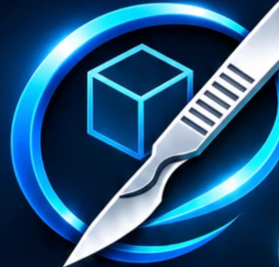

Listo para importar. El archivo permanece en este navegador.

Editor de precisión para separar modelos 3D
Separa, perfecciona y prepara tus modelos para impresión 3D.
Dibuja una línea encima de la parte que quieres cortar (por ejemplo, de lado a lado de una pierna): aparece un plano del mismo tamaño. Solo se corta lo que ese plano atraviesa. Dibuja todos los que quieras. Con dos dedos giras la vista.
Sin planos.
Toca alrededor de la zona para poner puntos. Cierra el contorno tocando el primer punto (verde) y sale una pieza con esa forma y esta profundidad. Arrastra para girar la vista.
Sin puntos.
Se perderán los cambios en memoria. Descarga antes los archivos que quieras conservar.
Activa una herramienta, cierra el panel y toca la figura para seleccionar triángulos. Puedes girarla después con el modo Seleccionar.
Solo se separan componentes enteros cerrados. Las zonas parciales necesitan una reconstrucción posterior.
Selecciona primero una malla en el visor o desde Componentes. Este corte es experimental.
Activa el ajuste, cierra el panel y arrastra el punto amarillo en el visor. Abre CORTAR nuevamente para confirmar.
Si el corte se completa, selecciona las piezas en Componentes para revisarlas; usa «Atrás» para deshacer.